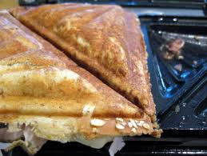
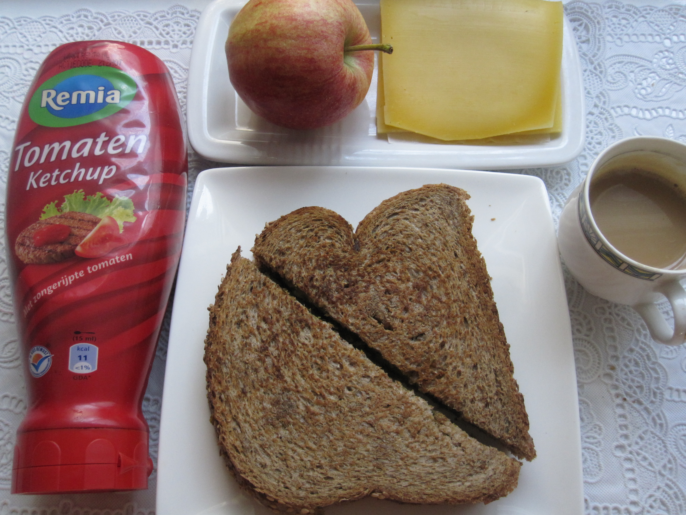
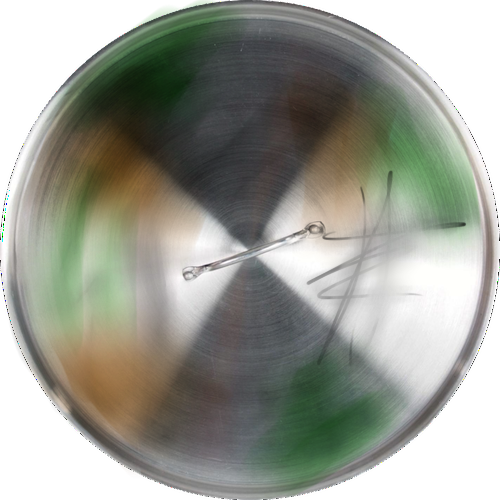
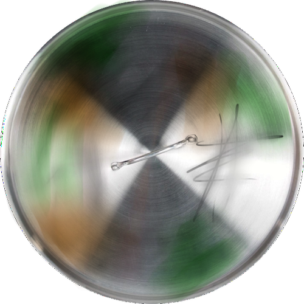

Sandwich Maker's Story
Sandwich Maker arrived in the kitchen in the late 1990's as a wedding gift and has always been regarded as a sort of spiritual guide by the other appliances. He presided over the union of Kettle and Toaster, which took place on top of Oven.He later acted as a mediator when they went through their separation.
He is Pot's only friend in the kitchen and supports her when she's feeling down due to the other pots' treatment of her. Sandwich Maker likes the fact that Pot is different. He has romantic feelings towards her but can't bring himself to tell her due to fears of being excommunicated from the kitchen. He is a well respected member of the kitchen and he is afraid his reputation would be ruined for having feelings for an "outsider."
 

Sometimes I just wish I didn't care what the others think.


 
